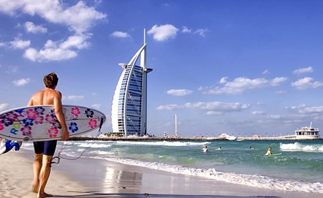

HOME
What is Dubai popular for??
- Dubai has the tallest buidling in the world known as Burj Khalifa.
- Dubai has extravegant hotels such as 7-star Burj Al Arab.
- Dubai is the connection of the east and west world.
- It is one of the largest shopping hubs in the world.
- Its beaches are relaxing and fun.
- Palm Jumeirah the man-made island is one of the famous attraction of dubai in the world.
- The famous deseret safari's are extravagant with the dunes of dubai and traditional arabic food with belly dancing.
When is the best to visit Dubai??
Visiting Dubai is the best experience anytime of the year. But if you are comfortable with a spring weather, the best time to visit dubai is October-March.
DUBAI AT ITS BEST

Palm Jumeirah:
The Palm Jumeirah is an artificial archipelago in United Arab Emirates, created using land reclamation by Nakheel, a company owned by the Dubai government, and designed and developed by Helman Hurley Charvat Peacock/Architects, Inc. It is one of three planned islands called the Palm Islands (Palm Jumeirah, Palm Jebel Ali and Palm Deira) which would have extended into the Persian Gulf, increasing Dubai's shoreline by a total of 520 kilometres (320 mi). The Palm Jumeirah is the smallest and the original of three Palm Islands originally under development by Nakheel. It is located on the Jumeirah coastal area of the emirate of Dubai, in the United Arab Emirates (UAE).
Palm Jumeirah Monorail is a 5.4-kilometre-long (3.4 mi) monorail connecting the Atlantis Hotel to the Gateway Towers at the foot of the island, opened on 6 May 2009.[1] located on Palm Jumeirah island in Dubai, United Arab Emirates. The monorail connects the Palm Jumeirah to the mainland, with a planned further extension to the Red Line of the Dubai Metro.[2] The line opened on 30 April 2009.[3] It is the first monorail in the Middle East.